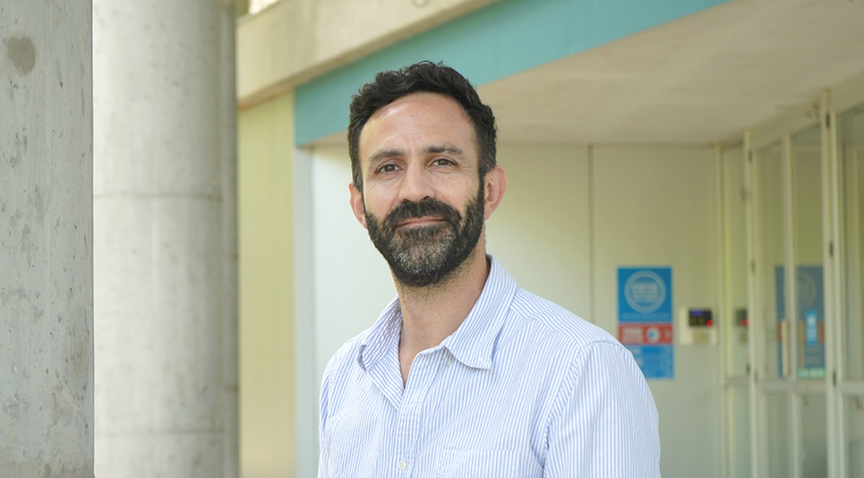

AJI 2025
Para darle un puntapíe inicial a nuestra comunidad, en el 2025 realizaremos nuestro primer congreso, donde, a diferencia de otros eventos académicos tradicionales, pusimos el énfasis no solo en la presentación de resultados científicos, sino también en el intercambio de técnicas experimentales, herramientas de trabajo, dificultades comunes y aprendizajes cotidianos que forman parte esencial del hacer ciencia.
16 y 17 de Octubre 2025 en el Instituto Leloir
Av. Patricias Argentinas 435, Ciudad Autónoma de Buenos Aires

Ejes temáticos del congreso y Oradores Destacados:
🔬 Ejes temáticos del congreso
- Bioquímica, Biología molecular y celular
- Biología vegetal y Biotecnología
- Bioinformatica y Biología Computacional
- Biología del desarrollo y Neurociencias
🧠 Oradores destacados
-

Dr. Federico Ariel
Investigador independiente del CONICET, trabaja actualmente en el Instituto de Fisiología, Biología Molecular y Neurociencias (IFIBYNE-UBA). -
 Dra. Lucía Chemes
Dra. Lucía Chemes
Investigadora independiente del CONICET, trabaja actualmente en el Instituto de Investigaciones Biotecnológicas (IIB-UNSAM). -
 Dra. Daniela Di Bella
Dra. Daniela Di Bella
Doctora en Ciencias Biológicas, actualmente realiza su posdoctorado en el laboratorio de Paola Arlotta en Harvard University. -
Dr. Ariel Waisman
Investigador Asistente del CONICET, trabaja actualmente en el Laboratorio de Investigación Aplicadas a Neurociencias (FLENI).
🌟 Invitado especial

Investigador superior del CONICET, ex director del IFIBYNE (UBA-CONICET). Su trayectoria científica y su compromiso con la ciencia pública lo convierten en una referencia ineludible para toda la comunidad científica argentina.
📣 Paneles especiales
Comunicación pública de la ciencia:
Mesa redonda dedicada a los desafíos de la comunicación de la ciencia. Participarán la reconocida periodista Nora Bär, los investigadores y comunicadores Dr. Pedro Bekinschtein y Dra. Nadia Chiaramoni. Moderación a cargo de Sol Figueroa.
Nuevas voces emergentes:
Actividad coordinada por Sol Figueroa (CONICET-UNR, Cientina) y la Dra. Piscilia Pagnotta (CONICET-IBYME, UBA).
Ciencia y divulgación:
Charla a cargo de la Dra. Guadalupe Nogués.
🗓️ Formato general del evento
- Charlas breves (10 minutos + 5 de preguntas) organizadas por eje temático
- Conferencias magistrales de oradores/as invitados/as
- Sesiones de pósters abiertas al intercambio entre pares
- Mesas de discusión interdisciplinaria, incluyendo paneles especiales
- Actividades sociales y recreativas orientadas a fortalecer la comunidad científica joven
Financiamiento 2025:
Si deseas colaborar con la AJI, no dudes en contactarnos.
La AJI es una organización sin fines de lucro y no cuenta con financiamiento interno.
Conocé a nuestros sponsors: